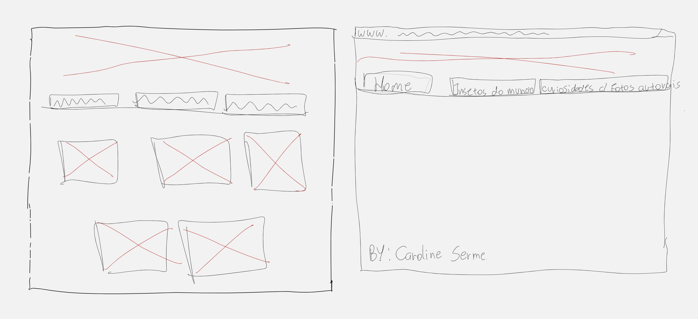
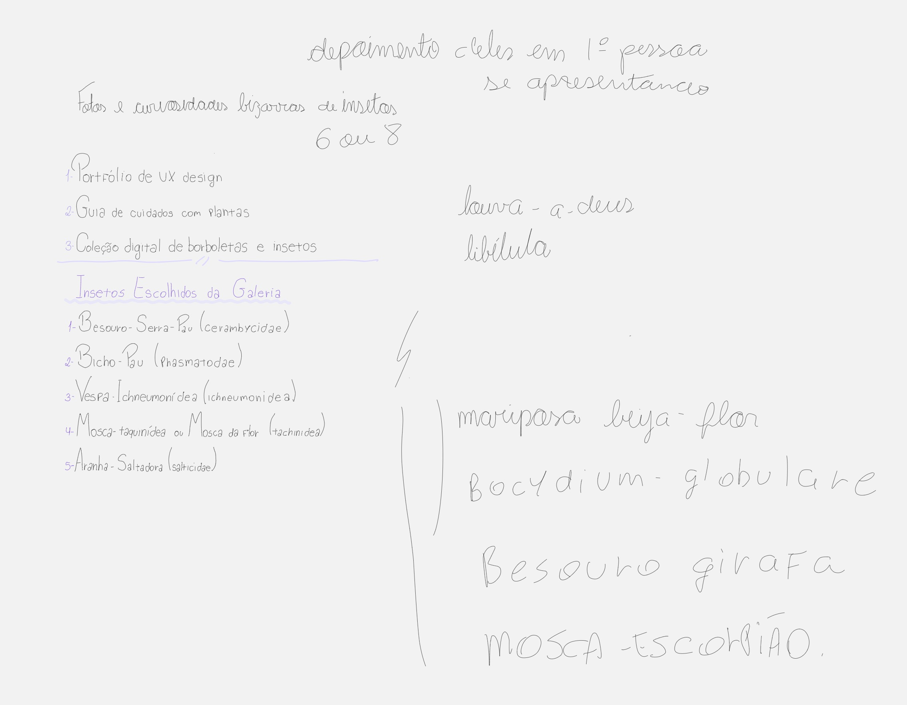

Insetos do Mundo
Esse projeto nasceu da minha paixão por animais, especialmente insetos, e marcou uma nova etapa no meu aprendizado em desenvolvimento web. A proposta foi transformar uma ideia simples em uma página mais estruturada visualmente, explorando recursos de CSS para criar uma interface organizada e atrativa.
Contexto e Desenvolvimento
Objetivo e Propósito
Aprofundar os conhecimentos de CSS, aplicando conceitos de estilização e composição visual para transformar uma estrutura HTML básica em uma interface mais organizada e visualmente atrativa.
Desenvolvimento Técnico
O projeto foi desenvolvido explorando recursos de CSS para estilização de elementos, dimensionamento de imagens, espaçamentos, bordas e organização de layout. Também trabalhei a estrutura visual da galeria e a navegação entre diferentes seções do conteúdo.
Ver Projeto ao Vivo
Acesse o site publicado e conheça a galeria de insetos e curiosidades.
Acessar Projeto ao VivoProcesso e Estrutura
Abaixo estão os wireframes que guiaram a estrutura da página e a organização do conteúdo.

Organização de Conteúdo
Navegação por abas para separar os temas e facilitar o acesso ao conteúdo.

Estrutura da Página
Galeria de imagens organizada em cards com título e espaçamento consistentes.